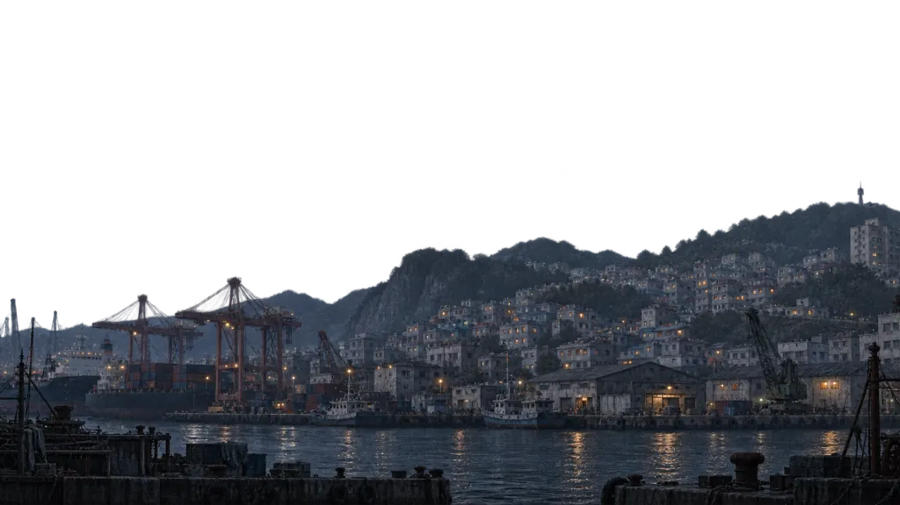

멸망 이후, 부산에서 서울까지
서울까지400km


초안 동작 안내
부산에서 출발
실제 적용 때는 기존 새 여정 시작 흐름으로 이어집니다. 저장 기록이 있다면 기존 확인 절차를 유지합니다.
이 초안에서는 게임을 시작하거나 저장을 바꾸지 않습니다.
타이틀로 돌아가기초안 동작 안내
길 위에는 이런 이야기가 있다
낡은 달구지를 집으로 고치고, 낯선 사람의 일을 함께 해결하고, 폐허에 남은 흔적을 좇는다.
실제 적용 때는 기존 여정 미리보기로 이어집니다. 이 초안은 그 화면을 재현하지 않습니다.
타이틀로 돌아가기